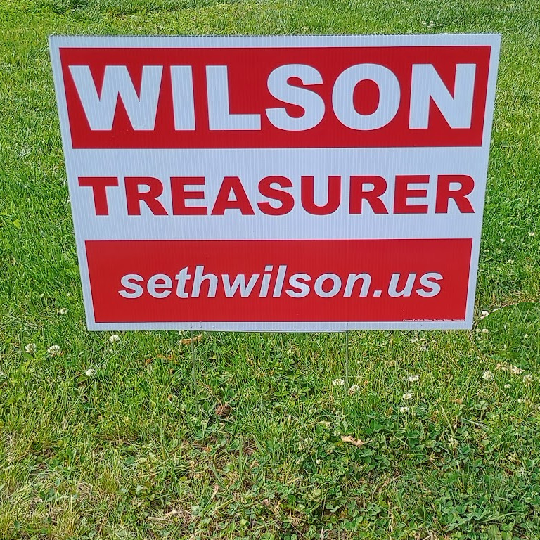

Yard signs are available now! If you would like a yard sign to show your support, please click the button below. Thanks!
A donation is not required, but please consider one to help me order more signs to help reach as many people as possible!
Authority: Citizens For Seth Wilson. Yvonne Wilson, Treasurer. Copyright 2026. All rights reserved.
For more information about Seth Wilson, Republican candidate for Washington County Treasurer, click here.
Yard signs are available now! Read more...